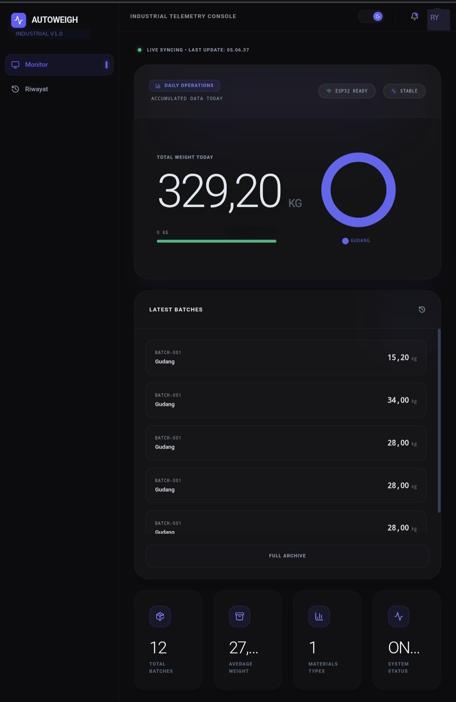

AutoWeigh
Two industrial scales worked perfectly — but their data only existed on the display. Connected both to a live dashboard without replacing a single piece of hardware. ~13,000 kg weighed daily across both scales. Every batch recorded automatically — anomalous weights flagged before moving to the next stage.
From Display Glass to Live Intelligence
Scale Data Trapped Behind Glass
Two industrial scales — warehouse and production floor — were working fine. The problem was that their data only existed on the physical display.
Live in Production
Industrial telemetry console — live batch feed from both ESP32 nodes, total weight vs daily target, and connection status per node.

Screenshot uses dummy batch data for confidentiality — UI layout, anomaly badges, and ESP32 status reflect the actual production build.
RS232 as the Bridge
Industrial scales almost always have an RS232 port. They output weight data automatically after each measurement. That is the entry point.
== character signals the weight reading. The ESP32 firmware reads UART byte by byte, buffering until it sees =, then parses the number that follows. No standard format exists across manufacturers — a Digi DS-560 or Jadever JWI-3000 would use different delimiters (CR/LF, prefix ST,GS,, etc.), requiring a different parser per model.What the Dashboard Shows
// Every ESP32 INSERT triggers this instantly // No polling — Supabase pushes via WebSocket supabase .channel('timbangan-live') .on('postgres_changes', { event: 'INSERT', schema: 'public', table: 'timbangan_batch' }, (payload) => { setTodayBatches(prev => [payload.new as TimbanganBatch, ...prev] ); }) .subscribe();
// Z-score computed per material from rolling history // mean + stdDev learned from actual batch data const zScore = Math.abs( (weight - mean) / stdDev ); if (zScore > 2.0) isAnomaly = true; // Example: flour normally ~25 kg // A 2 kg or 80 kg batch flags immediately
The Pragmatic Pattern
End-to-End Data Flow
From scale measurement to dashboard update — every layer of the pipeline, with protocols and voltage levels explicit.
= delimiter detected (Sonic A15E format), then parses the weight value. Packages JSON payload and POSTs to Supabase REST endpoint over Wi-Fi via HTTPS. No local buffer — failed POST = lost reading.timbangan_batch. Pushes new rows to all connected dashboard sessions via WebSocket — no polling needed.